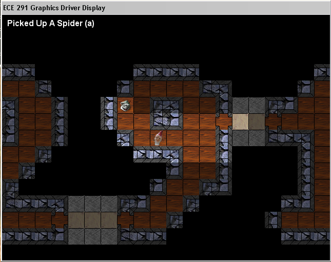

<%
title = "ECE 291 - MP4"
subtitle = "MP4"
%>
Machine Problem 4: 3D Z-Buffer
| Assigned |
Monday, March 25 |
| Due Date |
Monday, April 8
|
| Purpose |
Protected Mode, High Resolution Graphics, SSE/MMX Instructions, Mouse |
| Points |
75 |
Introduction
In this MP, you will be developing a 3D rendering engine that uses a
Z-buffer, or depth buffer, to determine which parts of an object the user will
be able to see. You'll also investigate camera models in order to
"walk around" the world and perspective projection which will enable
you to see things as in real life - far away objects appear smaller, and
nearer objects appear larger.

Problem Description
You will be implementing the MP by doing the following:
Functions
This assignment has 17 functions. You will receive credit by
replacing each of the functions with your own code. All the functions are C-style functions (parameters on stack, return value in
eax/ax/al, all general purpose registers other than esi and edi may be
clobbered). A function that does not take any parameters will be denoted as void
within the parentheses. A parameter name prefixed with an asterisk (*) means it is a
pointer, otherwise the parameter is an actual value. The size of the parameters will be denoted as
word or dword. A function that does not return a value will be declared as void,
otherwise the size of return value will be specified using the previously
mentioned scheme.
void _CrossProduct(dword *VectorA, dword *VectorB)
- Calculates the cross product A x B, storing the result to vector A
- Inputs:
- VectorA - pointer to vector structure
- VectorB - pointer to vector structure
- Outputs:
- Overwrites the vector pointed to by VectorA with the value of the
cross product A x B
- Calls: None
- Points: 8
- Notes:
- Refer to the vector math section of the writeup for the cross product
formula
void _MulVectorMatrix(dword *Vector, dword *Matrix)
- Multiplies a vector by the source matrix, storing the result to the vector
- Inputs:
- Vector - pointer to vector structure
- Matrix - pointer to matrix structure
- Outputs:
- Overwrites the vector pointed to by Vector with the
product Matrix * Vector
- Calls: None
- Points: 6
- Notes:
- Refer to the vector math section of the writeup for the multiplication
formula
void _CreateCamera(void)
- Creates a matrix that will transform a point from world space to camera
space
- Inputs:
- [_CameraEye] - vector containing location of camera
- [_CameraLookAt] - vector containing the direction in which the camera
is pointing
- [_CameraUp] - vector containing the camera's angle of rotation about
the z-axis
- [_RealOne] - The floating point representation of 1
- Outputs: [_CameraMatrix]
- Calls: _NormalizeVector, _CrossProduct
- Returns: None
- Points: 6
- Notes:
- Refer to the vector math section of the writeup for the camera matrix formulae
- Use the _TempVector* variables to hold temporary calculations, and
declare more if you need them
dword _MoveCamera(void)
- Moves the camera around the scene by either changing its location,
switching to a new default position, or returning to the current default
position
- Inputs:
- [_MPFlags] - flags variable for the MP
- [_CameraEye] - vector containing location of camera
- [_CameraLookAt] - vector containing the direction in which the camera
is pointing
- [_CameraPos] - current default camera position
- [_CameraPositions] - table containing the values of the four default
camera positions
- [_RealOne] - The floating point representation of 1
- Outputs: [_CameraEye], [_CameraLookAt], [_MPFlags], [_CameraPos]
- Calls: _NormalizeVector, _CrossProduct
- Returns: zero if none of the three actions was taken, non-zero otherwise
- Points: 10
- Notes:
- Refer to the vector math section of the writeup for info on moving the
camera
- The default positions are circular, so switching on the fourth default
position should bring you back to the first
- Clear all of the movement flags (move camera, switch default
position, return to current default position) if one of the actions is
taken
- You may assume that only one action will occur at a given time, i.e.
you don't have to worry about moving backward and to the left in the
same function call
- Use the _TempVector* variables to hold temporary calculations, and
declare more if you need them
void _ConvertPoint(dword *Point, dword *Vector)
- Transforms a point represented as a floating point vector from world space to camera space to screen space and then converts it to an integer (x,y,z) point
- Inputs:
- Point - pointer to point structure
- Vector - pointer to vector structure
- [_RealOne] - The floating point representation of 1
- Outputs: Writes converted point to the point structure pointed to by Point
- Calls: _MulVectorMatrix, _CreateCamera
- Returns: None
- Points: 10
- Notes:
- Refer to the vector math section of the writeup for info on converting
the point
- Remember to use the emms instruction at the end of the function to
clear the mmx state after using mmx registers
void _CalcNextPoint(dword *Bresenham)
- Calculates the next point of a line according to Bresenham's line
algorithm
- Inputs:
- Bresenham - pointer to Bresenham's line algorithm variable structure
- Outputs: Writes to Bresenham structure pointed to by Bresenham
- Returns: None
- Calls: None
- Points: 3
- Notes:
- Refer to the triangle section of the writeup for the pseudocode for
this function
void _DrawPixel(dword *DestOff, dword *ZBufferOff, word X, word Y,
word Z, dword Color)
- Draws a pixel with color Color at point (X,Y) with depth Z in the buffer pointed to by
DestOff
- Inputs:
- DestOff - offset of a screen image buffer in memory
- ZBufferOff - offset of Z-Buffer in memory
- X - x coordinate of point
- Y - y coordinate of point
- Z - z coordinate of point
- Color - color of pixel to draw
- Outputs: Pixel drawn to buffer
- Calls: None
- Notes:
- Do not draw the pixel if it is outside the boundaries of the
screen. Acceptable values are 0-639 inclusive for x and 0-479
inclusive for y.
- If the depth of the pixel is greater than the current depth at that
point, do not draw the pixel
- All entries in the Z-Buffer are positive
- Each point in the screen image buffer takes up 4 bytes
- Each point in the Z-Buffer takes up 2 bytes
- Points: 5
void _DrawLine(dword *DestOff, dword *PointA, dword *PointB, dword Color)
- Draws a line with color Color from PointA to PointB in the buffer
pointed to by DestOff
- Inputs:
- DestOff - offset of a screen image buffer in memory
- PointA - pointer to point structure
- PointB - pointer to point structure
- Color - color of line to draw
- Outputs: Line drawn to buffer
- Calls: _CreateBresenham3D, _DrawPixel, _CalcNextPoint
- Returns: None
- Notes:
- Follow the algorithm given in the writeup
- Use the _LineBres variable to hold the necessary values for the
algorithm
- Points: 3
void _DrawTriangle(dword *DestOff, dword *PointA, dword *PointB, dword *PointC,
dword Color)
- Draws a filled triangle of color Color with endpoints PointA, PointB, and
PointC in the buffer
pointed to by DestOff
- Inputs:
- DestOff - offset of a screen image buffer in memory
- PointA - pointer to vector structure
- PointB - pointer to vector structure
- PointC - pointer to vector structure
- Color - color of line to draw
- Outputs: Triangle drawn to buffer
- Calls: _ConvertPoint, _CreateBresenham3D, _DrawLine, _CalcNextPoint
- Returns: None
- Notes:
- Points: 3
dword _AlphaCompose(dword Pixel)
- Alpha composes a pixel onto a black background
- Inputs:
- Outputs: None
- Returns: value of alpha composed pixel
- Calls: None
- Points: 3
- Notes:
- Refer to anti-aliased text section of the writeup for the algorithm to
perform the alpha composition
void _DrawText(dword *StringOff, dword *DestOff, word X, word Y, dword Color)
- Draws a text string pointed to by StringOff with color Color beginning at point
(X,Y)
in the buffer pointed to by DestOff
- Inputs:
- StringOff - offset of string to draw
- DestOff - offset of a screen image buffer in memory
- X - x coordinate of start point
- Y - y coordinate of start point
- Color - color of the string to draw
- [_FontOff] - offset of font image data
- Outputs: String drawn to buffer
- Calls: _AlphaCompose
- Notes:
- Points: 8
dword _InstallKeyboard(void)
- Installs the keyboard ISR
- Inputs:
- [_kbINT] - interrupt number for keyboard given by EX291 environment
variable
- Outputs: None
- Calls: _LockArea, _Install_Int
- Returns: 1 on error, 0 otherwise
- Notes:
- You may use a library function to install
this interrupt for you
- Use _ LockArea to lock the variables the callback will access in
addition to locking the callback function itself
- To get the length of the handler, subtract the start of the handler
from the label at the end of the handler (remember, labels are just
addresses)
- Points: 1
void _RemoveKeyboard(void)
- Uninstalls the keyboard ISR
- Inputs:
- [_kbINT] - interrupt number for keyboard given by EX291 environment
variable
- Outputs: None
- Calls: _Remove_Int
- Notes:
- You may use a library function to remove
this interrupt for you
- Points: 1
dword _KeyboardISR(void)
- Handles keyboard input from the user
- Inputs:
- Keypress waiting at port [_kbPort]
- [_kbIRQ]
- Outputs: [_MPFlags]
- Calls: None
- Returns: zero, indicating you do not want to chain the original handler
- Notes:
- ESC key will end the program
- Up arrow key will move you forward
- Down arrow key will move you backward
- Left arrow key will move you to the left
- Right arrow key will move you to the right
- Do not chain the original handler
- You need to save/restore the temporary registers you use as this is an
ISR (not eax though!)
- Remember to send an end-of-interrupt signal (write 20h to port 20h) at
the end of the ISR - if [_kbIRQ] >= 8, you also need to ACK with
the slave PIC (write 20h to port A0h)
- Points: 2
dword _InstallMouse(void)
- Installs the mouse callback
- Inputs: None
- Outputs: [_MouseSeg], [_MouseOff]
- Returns: 1 on error, 0 otherwise
- Calls: _LockArea, _Get_RMCB, DPMI_Int
- Notes:
- You cannot call int 33h directly - you need to simulate a
real mode interrupt by calling DPMI_Int with the appropriate values in
the DPMI registers (ex. DPMI_EAX)
- Use _Get_RMCB to get a real mode segment and offset that you pass to int
33h
- Do not try to pass cs and the offset of MouseCallback directly to int
33h: selectors are not the same as segments!
- Use _LockArea to lock the variables the callback will access in
addition to locking the callback function itself
- To get the length of the handler, subtract the start of the handler
from the label at the end of the handler (remember, labels are just
addresses)
- For reference on int 33h, function 000Ch, visit this
page: http://www.delorie.com/djgpp/doc/rbinter/id/87/59.html
(also look at the linked tables)
- You want the callback to be called on left mouse button press and
right mouse button press
- Points: 2
void _RemoveMouse(void)
- Removes the mouse callback
- Inputs: [_MouseSeg], [_MouseOff]
- Outputs: None
- Calls: _Free_RMCB, DPMI_Int
- Notes
- Points: 2
void _MouseCallback(dword *DPMIRegsPtr)
- Handles mouse input from the user
- Inputs:
- DPMIRegsPtr - pointer to DPMI register structure
- [_MPFlags] - flags variable for the MP
- Outputs: [_MPFlags]
- Calls: None
- Notes:
- Use the es selector to retrieve mouse data, not ds
- Use DPMI_<REGISTERNAME>_off to access DPMI register structure
values (ex. DPMI_EAX_off)
- Fields in condition mask register (see table 3172 linked from URL in
InstallMouse function) that you will need:
- Bit 1 - left mouse button press generated interrupt
- Bit 3 - right mouse button press generated interrupt
- Left mouse button press will switch the default position of the camera
- Right mouse button press will return the camera to its current default
position
- You need to save/restore the temporary registers you use as this is a
callback
- Points: 2
Given Code
void _MP4Main(void)
- Runs the main loop
- Inputs: None
- Outputs: None
- Calls: _DrawScene, _MoveCamera
void _DrawScene(void)
- Draws the scene of triangles
- Inputs: None
- Outputs: None
- Calls: _DrawTriangle, _DrawText, _CopyToScreen
void _NormalizeVector(dword *Vector)
- Normalizes the vector pointed to by Vector
- Inputs:
- Vector - pointer to vector structure
- Outputs: Overwrites the vector pointed to by Vector with its normalized
value
- Calls: None
- Notes:
- Refer to the vector math section of the writeup for the normalization
formula
void _CreateBresenham3D(dword *Bresenham, dword *PointA, dword *PointB)
- Sets up a Bresenham's line algorithm variable structure to draw a line
between PointA and PointB
- Inputs:
- Bresenham - pointer to Bresenham's line algorithm variable structure
- PointA - pointer to point structure
- PointB - pointer to point structure
- Outputs: Writes values to Bresenham structure pointed to by Bresenham
- Calls: None
- Notes:
Procedure
- Copy the given MP4 files from the network drive to your home directory
with the following command:
xcopy /s V:\ece291\mp4 W:\mp4
Alternatively, from home you can download the same files as mp4.zip.
- Unlike previous MPs, you will need to run 'ex291' to set up the
graphics display. You can do this in a command prompt window, and you
only need to do this once per DOS session. One issue with 'ex291' is
that it seems to disrupt the 'make' command. To get around this, have
two windows open - one in which you DO NOT run 'ex291' and use to make your
program, and the other you use to run your program.
- Note that MP4 will not run on your machine at home unless you have a
Pentium III chip or better and Windows 2000 or Windows XP.
- As with previous MPs, use a text editor to modify the program. As given,
the program uses LIBMP4 routines to implement all functionality. To receive
full credit for the assignment, you will need to implement each of the
subroutines described above with your own code.
- By modifying a few comments, you can mix and match usage of your own code
and Library routines. You may notice that the LIBMP4 routines contain
extraneous and difficult-to-read code. They are not meant to be easily
unassembled!
Final Steps
1. Demonstrate your MP4.EXE to a TA. You may be asked to recompile and demo
the program.
2. Be prepared to answer questions about any aspect of the operation of your
program. The TAs will not accept an MP if you cannot fully explain your code and
your implementation. Delayed MPs will be subject to late penalties as described
in the course syllabus (7 pts per day up to 5 days).
3. The TA will complete the code submission procedure.
MP4.ASM (program framework)